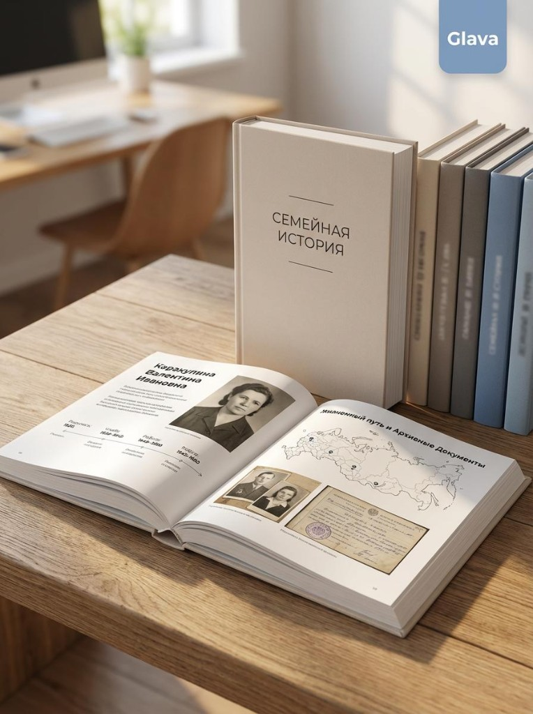

Помогаем детям и внукам записывать истории родителей и бабушек в современную семейную книгу — от первых разговоров до готовой библиотеки.
Первые проекты — в ручном пилоте, помогаем лично.
Мы даём готовые вопросы и темы, чтобы не теряться и не задавать только «Как ты работал?»
Записывайте голосом или текстом разговоры с бабушкой, дедушкой, родителями.
Подгрузите семейные фото, сканы документов, письма, вырезки.
Мы собираем всё в вычитанную, красиво сверстанную книгу — в PDF или с печатью на бумаге.
Можно делать историю для каждого члена семьи и собрать целую полку «Семейная история».
Хронология, ключевые вехи, география — всё в одном месте, чтобы легко ориентироваться в судьбе близкого.
Рассказы, воспоминания, смешные и тяжёлые моменты — то, что хочется сохранить и передать дальше.
Встроенные фотографии, архивные бумаги, карты — визуальная история семьи в одной книге.
PDF-версия для семьи и печатный вариант в твёрдом переплёте — как подарок или память.